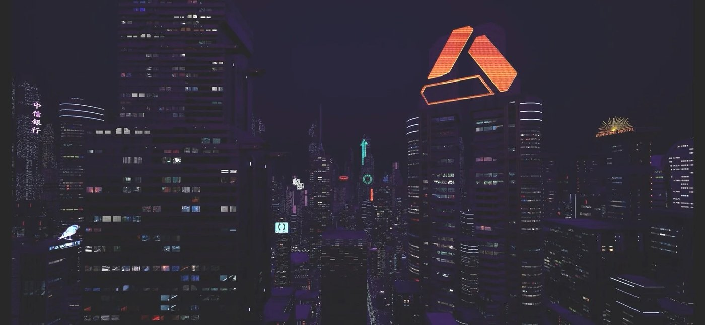

Omni
A concept I developed and pitched for a short machinima film group project. The concept was selected, and a team of us created the film — from beats to boards, script to animatics, and finally in-engine rendering and animation. It was shown on stream between game presentations at the Utah Games Launch Stream.
Machinima Film